Data Structures and Algorithms
with Object-Oriented Design Patterns in C++
Data Structures and Algorithms
with Object-Oriented Design Patterns in C++
Prim's algorithm
finds a minimum-cost spanning tree
of an edge-weighted, connected, undirected graph  .
The algorithm constructs the minimum-cost spanning tree of a graph
by selecting edges from the graph one-by-one
and adding those edges to the spanning tree.
.
The algorithm constructs the minimum-cost spanning tree of a graph
by selecting edges from the graph one-by-one
and adding those edges to the spanning tree.
Prim's algorithm is essentially
a minor variation of Dijkstra's algorithm
(see Section  ).
To construct the spanning tree,
the algorithm constructs a sequence of spanning trees
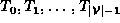,
each of which is a subgraph of G.
The algorithm begins with a tree that contains
one selected vertex, say
).
To construct the spanning tree,
the algorithm constructs a sequence of spanning trees
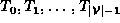,
each of which is a subgraph of G.
The algorithm begins with a tree that contains
one selected vertex, say  .
I.e., 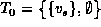.
.
I.e., 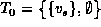.
Given 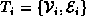, we obtain the next tree in the sequence as follows. Consider the set of edges given by
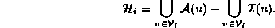
The set 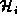 contains all the edges 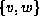
such that exactly one of v or w is in  (but not both).
Select the edge 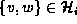 with the smallest edge weight,
(but not both).
Select the edge 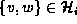 with the smallest edge weight,
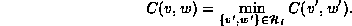
Then 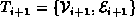,
where  and 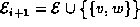.
After
and 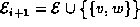.
After  such steps we get 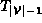
which is the minimum-cost spanning tree of G.
such steps we get 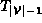
which is the minimum-cost spanning tree of G.
Figure illustrates how Prim's algorithm determines
the minimum-cost spanning tree of the graph  shown in Figure .
The circled vertices are the elements of
shown in Figure .
The circled vertices are the elements of  ,
the solid edges represent the elements of 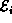
and the dashed edges represent the elements of .
,
the solid edges represent the elements of 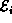
and the dashed edges represent the elements of .

Figure: Operation of Prim's Algorithm
 Copyright © 1997 by Bruno R. Preiss, P.Eng. All rights reserved.
Copyright © 1997 by Bruno R. Preiss, P.Eng. All rights reserved.